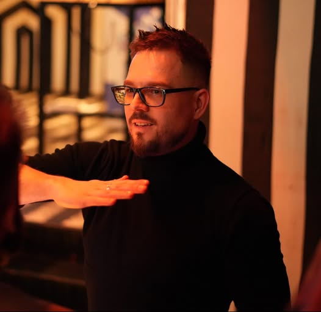

06.12.2025 · Białystok
ProgramAIstok 2025
Kurz opadł. Hypemani i sceptycy wyprodukowali już swoje tysiące postów na Linkedinie, a kursy o AI poszły jak swieże bułeczki, także kto miał zarobić to zarobił.
To co, porozmawiamy sobie bez emocji ale merytorycznie ? Skonfrontujemy doświadczenia ekspertów branży ? Technicznych CEO i founderów , CTO i data analityków? Sprawdzimy gdzie i jak komu AI w programowaniu się sprawdza, a na jakich obietnicach doskonałości AI już się zdążyliśmy przejechać ?
Porozmawiamy o zagrożeniach nie tylko słabej jakości odpowiedzi ale też korzystania z AI w cloudzie? Damy się pochwalić tym którym AI w pracy faktycznie pomaga i to mocno? Pogdybamy czy aktualny pricing większości LLMów to cisza przed burzą?
Rezerwujcie datę 06.12.2025 i widzimy się na Politechnice.
Rozkład jazdy: ⏱️
TBA
Prelegenci 👤
-
Artur Czemiel
Fullstack Developer
Doświadczony FullStack developer i autor narzędzi GraphQL Zeus oraz Axolotl. Jest znany w społeczności programistów jako prelegent i innowator, wcześniej pracował w branży VFX, a także opatentował algorytm ważenia małych obiektów przy użyciu smartfona.
Więcej → -

Piotr Tynecki
AI Engineer & Python Developer
Doświadczony programista i inżynier SI. Jest dobrze znany w polskiej społeczności Pythona. Jedni kojarzą go z organizacji PyStok, największej grupy użytkowników Pythona i AI w Polsce Północno-Wschodniej, inni jako prelegenta popularyzującego zastosowania AI w praktyce.
Więcej → -

Sebastian Dąbkowski
Software Architect & .NET Expert
Architekt oprogramowania z ponad 15-letnim doświadczeniem w technologii .NET. Łączy inżynierską precyzję z pragmatycznym podejściem do biznesu, projektując systemy, które realnie wspierają cele organizacji. Pasjonuje się automatyzacją i wykorzystaniem AI w procesach wytwarzania oprogramowania.
Więcej → -

Maciej Lotkowski
Serial Founder & CTO
Serial founder i CTO z ponad 20-letnim doświadczeniem. Inżynier Gadu-Gadu, pierwszy CTO w Jobandtalent i twórca Jobartis, jednego z największych portali pracy w Afryce Subsaharyjskiej. Pasjonat niszowych technologii, hackathonów zero knowledge i AI.
Więcej → -

Piotr Janiak
CTO & System Architect
CTO w BIM ALLY LTD., architekt systemów i pasjonat AI, który traktuje modele językowe jak wspólników w prototypowaniu. Łączy różne technologie – od JavaScriptu po Pythona – by szybciej tworzyć rozwiązania dla biznesu. A gdy akurat nie koduje, najpewniej śmiga na jednym ze swoich kilku rowerów.
Więcej → -

Łukasz Wałejko
AI Engineer & Medical Technologist
Lekarz z wykształcenia, programista z wyboru. Od dekady łączy świat medycyny i technologii, tworząc oprogramowanie w wielu językach – od Pythona po Rust. W Transition Technologies Science rozwija narzędzia dla medycyny cyfrowej i open source’owy projekt Trapper wspierający naukowców w analizie zdjęć z fotopułapek.
Więcej → -

Kamil Sijko
Data Science & AI Leader
Lider danych i AI w Moderna, gdzie łączy analitykę z zarządzaniem projektami badawczymi. Wcześniej kierował zespołem Clinical Data Science w Transition Technologies Science, wdrażając rozwiązania AI w medycynie i energetyce. Współorganizator R Users Warsaw i globalnej konferencji UseR! 2026.
Więcej → - Soon...
Partnerzy 🫶